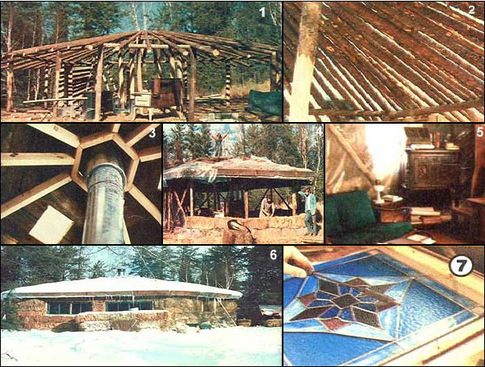

PHOTOS BY TH EAUTHOR
[1] The Mc Elderrys made their hay house by erecting a hexagon frame . . . [2] adding a strong umbrella roof . . . [3] building a fire-resistant central ceiling and . . . [4] ""haying"" in the top and sides. [5] Cold weather convinced the couple to add plastic insulation and . . . [6] a hay doghouse for their Russian wolfhounds so the folks could . . . [7] run their stained glass business in warmth and peace.